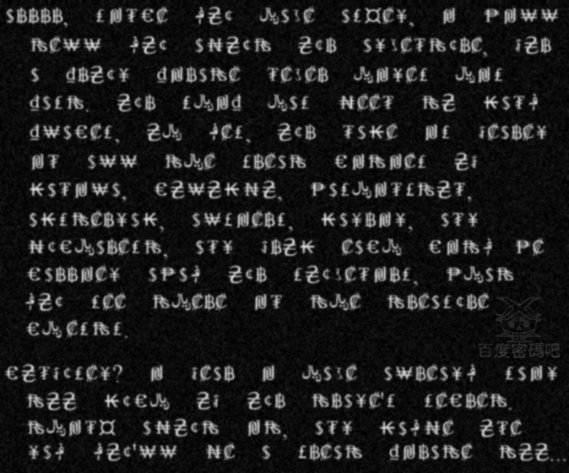

终于到了南美，传说遍地是黄金的地方。船一靠陆海员们就急不可耐地跳了上岸，想找到神秘的黄金之城。
可是那些穿鸟毛画鬼脸的土著人，许是见识过欧洲火铳的威力，一见到我们就钻入了丛林。我们转了半天也没见到黄金的影子，唯一的收获就是飞刀手杰克俘虏了一个落单的土著，从他的身上竟然搜得了一打五花八门的纸币。
伊莱文研究了半天，也没搞清楚那到底是法郎英镑还是别的什么币种。但不管是什么，在南美洲这个全是荒山野岭野人土著的地方肯定是用不了的，也许是他们从欧洲人那里抢来的吧。
还有一串项链似乎还有点价值，只是上面的挂牌鬼气森森，一面是骷髅头，另一面却密密麻麻地刻着一些符号，是土著人的文字吗？
赛文从那土著手里夺过它来的时候，那野人竟然像疯了似的挣扎着要抢回来，歇斯底里地大喊大叫。但那刺耳的声音很快就被红胡子的长刀生生割断了。
伊莱文显然已经开始对鲜血着迷，此刻他正沉醉在血腥的海风中，而赛文则是坐在角落里研究起了项链挂牌上的符号。看来跟泰勒混久了，他也喜欢研究起这些莫名其妙的东西来了。
过了好久，赛文才拓完挂牌上的符号，把项链丢还给杰克，并说：“看来，我们的同行来过这里，可是不幸遇难了。这块牌子就落在了这个土人的手里。”
说罢回头看了看甲板上残留的血迹说：“结果今天再次被我们抢回来了。”
杰克似乎很喜欢那条项链，把它挂在了脖子上。毕竟土著人是他捕获的，这，就算他的小小战利品吧！